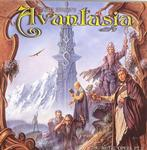

| Artist: | Avantasia |
| Title: | The Metal Opera Pt. II |
| Label: | AFM Records |
| Length(s): | minutes |
| Year(s) of release: | 2002 |
| Month of review: | [10/2002] |
| 1) | The Seven Angels | 14.17 |
| 2) | No Return | 4.29 |
| 3) | The Looking Glass | 4.52 |
| 4) | In Quest For | 3.53 |
| 5) | The Final Sacrifice | 5.02 |
| 6) | Neverland | 4.59 |
| 7) | Anywhere | 5.29 |
| 8) | Chalice Of Agony | 6.00 |
| 9) | Memory | 5.42 |
| 10) | Into The Unknown | 4.29 |
The Seven Angels is the opening epic one might say and it is also by far the most interesting track for progmetal lovers. Gothic choirs, a religious feel in beginning, I was thinking of Star One here. Melody wise the music is a bit slicker though, something that is apparent throughout the entire album in fact. Lead vocals are varied, quite close to Dio at times. Lots of keys and organ and heavy guitar chords, the former making the music more appetizing for progrockers. Some of those classical tunes as well. Actually, parts of this song are really quite good, but some of the parts are simply too sugary for my tastes. Anyway, halfway we get a filmic interlude with dark classical stuff. Nice atmosphere. The the music gets to be more urgent with a slow enticing build-up. Some piano, vocal drama (think Clive Nolan) and then it is back to the hardrock and metal. The latter part reminds me of Total Eclipse Of The Heart. Not bad in its stylew, but you like the style.
Queen is an easy reference for the vocal side of No Return, although the music owes more to Rhapsody, but again a bit too slick for my tastes. Bob Catley is making a name for himself as project singer and usually he does well. Same here on The Looking Glass and also the following ballad In Quest For. Somebody else sings in this songs. He shouldn't have.
Heaviness and rawness on The Final Sacrifice with a vocalist who thinks he is Arthur Brown. Spitting out his lyrics. Music has a good drive here, but the harmonies are way too obvious. After some more obviousness in Neverland, we come to musical style ballad music in Anywhere. Chalice Of Agony is fast and mean, but also terribly cliché.
With Memory Barbara Streisand is far off. The final track Into The Unknown has a rather nice vocal melody and Sharon Den Adel saving the day.